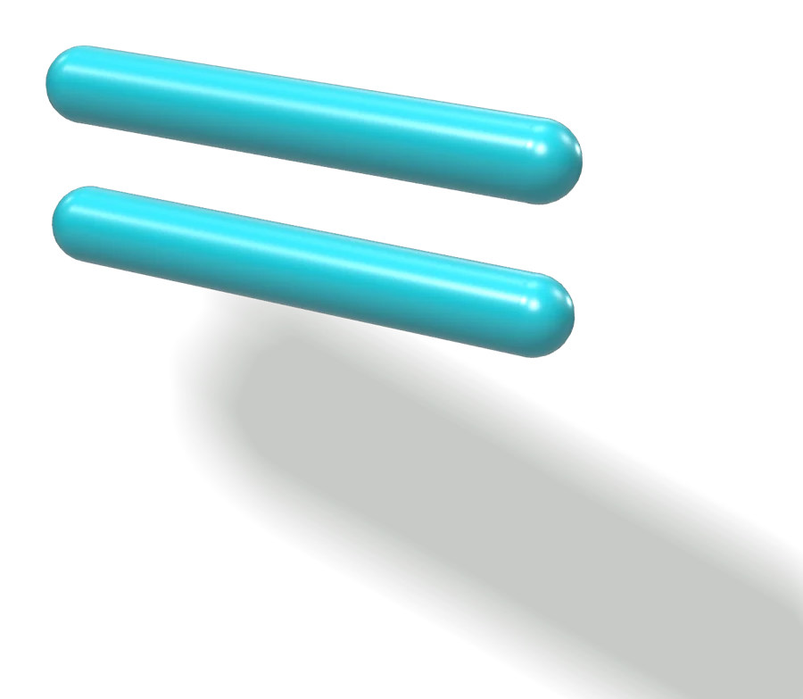

أدوات تدعم المستشار والطبيب، ولا تحلّ محلّهماTools that support counsellors and clinicians, not replace them
المستشارون الوراثيون فئة تخصصية نادرة في المملكة. صُمّمت سمات لتتولّى الشرح الروتيني والمتابعة، فيذهب وقت المختص إلى الحالات التي تحتاجه.Genetic counsellors are a scarce specialist workforce in the Kingdom. SIMAT is designed to take on routine explanation and follow-up, so specialist time goes to the cases that need it.
من قراءة النتيجة إلى خطة الرعايةFrom reading the result to the care plan
1 · قارئ النتيجة1 · Result reader
حساب المؤشرات تلقائيًا، وطلب الفحص التأكيدي عند الحاجة.Indices calculated automatically, and confirmatory testing requested when needed.
- نسب الهيموغلوبين من HPLC أو الرحلان الكهربائي بترتيب التقرير، مع المرجع لكل قيمة.Haemoglobin fractions from HPLC or electrophoresis in report order, with a reference range for each value.
- مؤشرات التمييز من تعداد الدم: Mentzer، Shine & Lal، England & Fraser، Srivastava، مع حدّ كل مؤشر.Discriminant indices from the blood count: Mentzer, Shine & Lal, England & Fraser, Srivastava, each with its cut-off.
- طلب الفحص التأكيدي تلقائيًا حين يتوفر تعداد الدم وحده.An automatic confirmatory test request when only a blood count is available.
2 · حلقة الأسرة2 · Family loop
حالة دعوة كل قريب وفحصه، دون أن يتولّى الطبيب إبلاغ الأسرة بنفسه.Each relative’s invitation and testing status, without the clinician having to notify the family.
- شجرة نسب وفق ترميز NSGC المعياري، مع خط زواج الأقارب وسهم الحالة الأولى.A pedigree in standard NSGC nomenclature, with the consanguinity line and proband arrow.
- دعوات للأقارب لا تذكر المريض، وجدول زمني لكل قريب حتى الفحص.Invitations to relatives that never name the patient, and a timeline for each relative up to testing.
3 · معايير الرعاية3 · Care checks
الفجوات في خطة الرعاية، وجهة الإحالة، في شاشة واحدة.Gaps in the care plan, and where to refer, on one screen.
- مقارنة رعاية المصاب بإرشادات TIF 2021 أو ASH 2020 وNHLBI 2014.Care for an affected person compared with TIF 2021, or ASH 2020 and NHLBI 2014.
- ما يمكن إجراؤه في هذا المستشفى وما يحتاج إحالة، مع اعتماد رقمي من الطبيب.What this hospital can do and what needs a referral, with the clinician’s digital sign-off.
ما تتولاه المنصة، وما يصل إلى المستشارWhat the platform handles, and what reaches a counsellor
تتولّى المنصة الشرح المتكرر، وتصل إلى المستشار الحالات التي تحتاج خبرته.The platform handles routine explanation; the cases that need a counsellor’s expertise reach the counsellor.
- شرح أي نتيجة حمل لصفة وراثية بلغة بسيطةExplaining any carrier result in plain language
- طريقة الوراثة، واحتمالاتها للأبناء والأقاربHow the trait is inherited, and the odds for children and relatives
- دعوة الأقارب المعنيّين للفحص، والتذكيرات، والمواعيدInviting the relatives concerned to be tested, reminders and appointments
- أي شخص لديه سؤال عن نتيجة فحصه الوراثي، أيًّا كان الفحص، ومنهم المقبلون على الزواجAnyone with a question about their genetic test result, whatever the test, including couples planning to marry
- النتائج غير الواضحة، وأي نتيجة تحمل خطرًا على الأبناءUnclear results, and any result that carries a risk for future children
- أسئلة التشخيص قبل الولادة أو قبل الزرعQuestions about prenatal or preimplantation diagnosis
- أي طلب تواصل، وأي تعبير عن ضيقAny request for contact, and any sign of distress
في القائمة: الأولوية، ومؤقّت الاستجابة، وملخص الحالة، والشجرة، والملاحظات. ولا يرى المستشار إلا حالات من أحالها إليه النظام أو طلبته.In the queue: priority, response timer, case summary, pedigree and notes. A counsellor only sees cases the system routed to them or that asked for them.
حين يحتاج الأمر إلى مركز آخرWhen another centre is needed
الإحالة إلى مركز تخصصيReferral to a tertiary centre
حين لا يتوفر فحص أو خدمة في المستشفى، مثل تصوير الحديد في القلب بالرنين.When a test or service is not available locally, such as cardiac iron MRI.
محاكاة في النموذجSimulated in the demoالاستشارة قبل الولادة وقبل الزرعPrenatal and preimplantation counselling
إحالة إلى المراكز المختصة وفق الأنظمة المعمول بها في المملكة.Referral to specialised centres under the regulations in force in the Kingdom.
متابعة أمراض الدمHaematology follow-up
للأقارب الذين يتبيّن أنهم مصابون، مع ربطهم بخطة رعاية.For relatives found to be affected, linked to a care plan.
محتوى استشارة مُراجَع، لا إجابات مولَّدةReviewed counselling content, not generated answers
كل نص يراه المستفيد مكتوب مسبقًا، ومُراجَع من مختصين، ومُرقَّم الإصدار، وباللغتين. لا يولّد النموذج التجريبي أي إجابة سريرية بالذكاء الاصطناعي.Every text a person sees is written in advance, reviewed by specialists, versioned and bilingual. The demo does not generate any clinical answer with AI.
- وحدات الاستشارة لكل حالة ولكل نقطة بدايةCounselling modules per condition and per entry point
- قوالب رسائل الأقارب بنبرات مختلفةRelative message templates in different tones
- سجل المراجعة: من راجع، ومتى، وما الذي تغيّرReview log: who reviewed, when, and what changed
- اعتماد المحتوى من مالك البرنامج قبل النشرContent approval by the programme owner before publishing